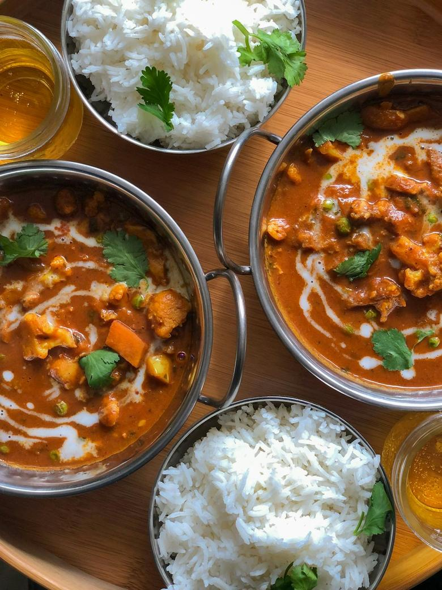
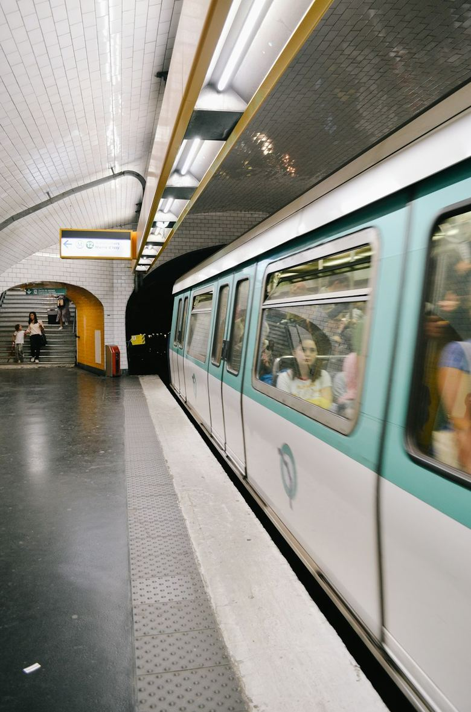
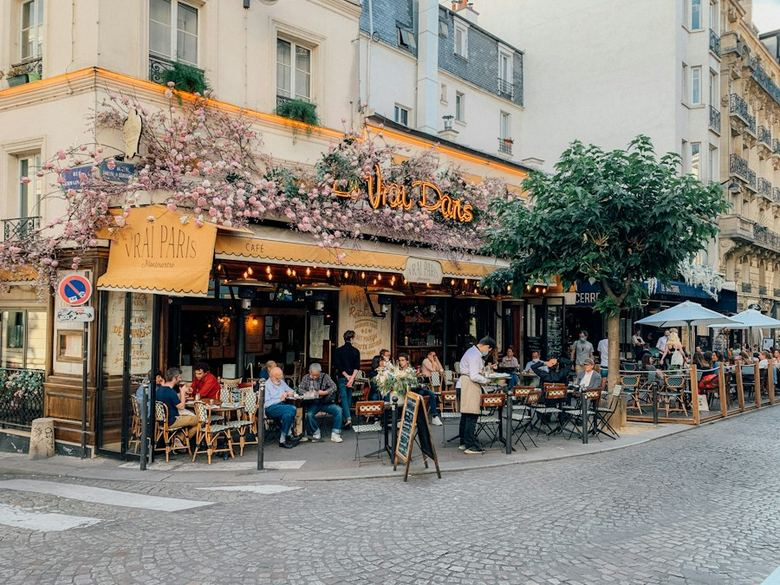
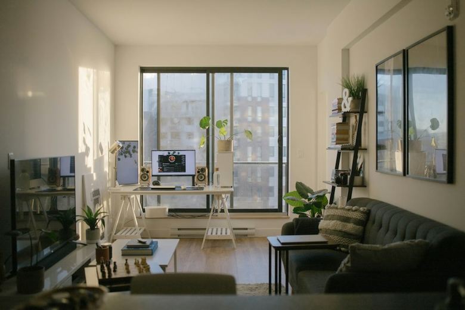
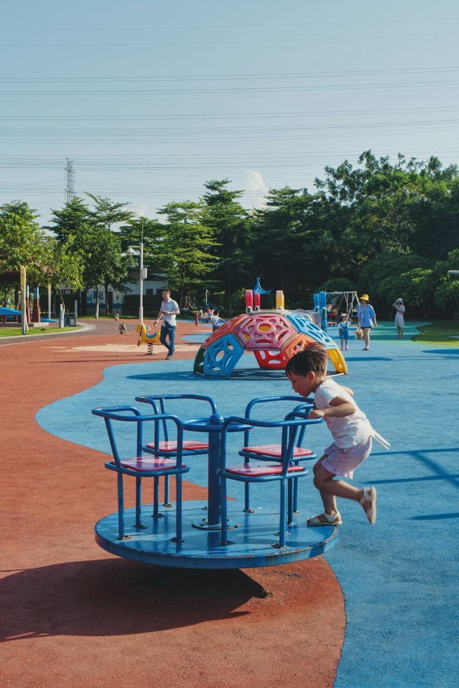
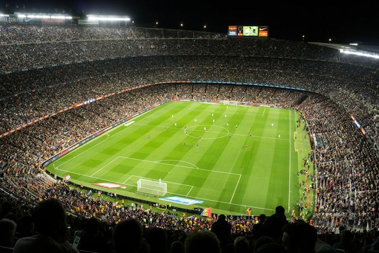
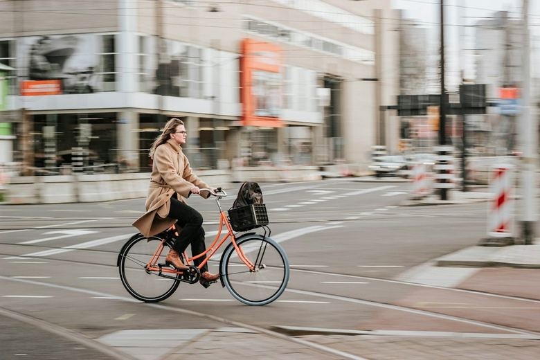
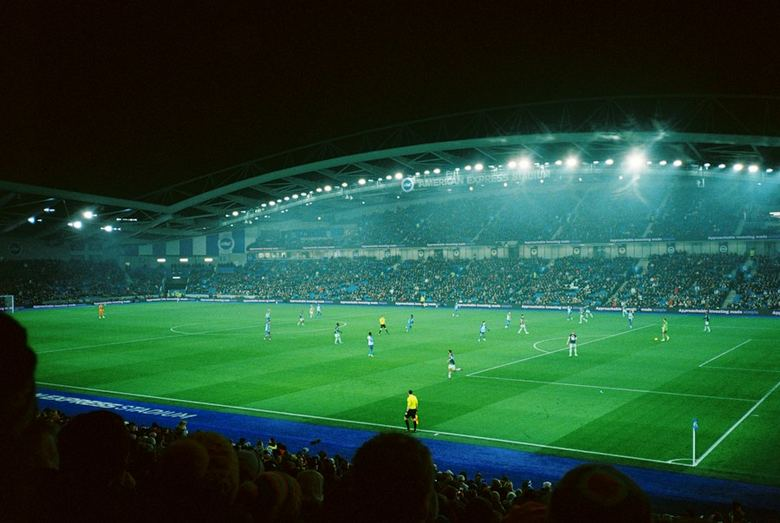
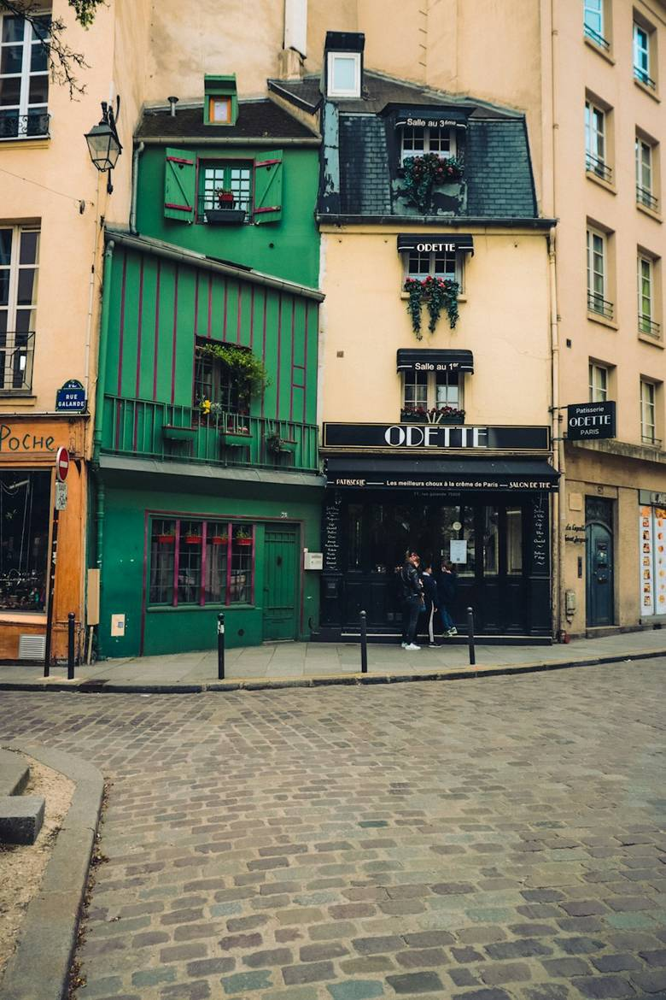
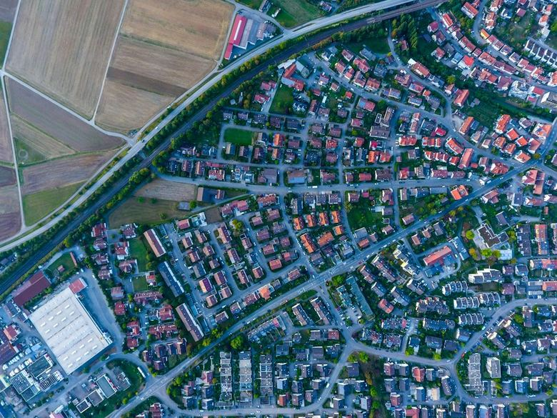

Direction artistique · 23 sept. 2026 · pour Imo · second tour
Cinquante directions, cinq écrans.
Dix directions par écran au lieu de six, et cette fois de vraies photos et de vrais visages dans chaque maquette. La première de chaque écran reste l'état actuel de l'app, relu dans le code ce matin, à l'échelle réelle d'un iPhone (390 pt). Les neuf autres changent un mécanisme : ce qu'on montre, ce qu'on cache, comment on compare, quand le résultat apparaît, ce qui est tapable.
Neuf neuvesAucune des 25 propositions du premier tour n'est reprise. Chacune a été vérifiée : est-ce un vrai changement de mécanisme, ou juste un habillage ?
Avant / aprèsPour la note et le QCM, chaque maquette montre le même take avant et après ton vote : c'est là que les directions diffèrent.
Règle produitQuelques directions changent une règle (plusieurs réponses, note sur 3…). Elles sont marquées : à trancher, pas à dessiner seulement.
ActuelRecommandéRègle produit
A
Notation de 1 à 5
« je veux voir les options de design pour les 1/2/3/4/5, on peut faire + simple et + compréhensible »
Le curry réchauffé le lendemain, tu lui mets combien ?

3,8/51
1
2
3
4
5
243312 votes
Après ton vote · tu as mis 4
3,8/51
1
2
3
4
5
243313 votes
Ce qu'on voit : La moyenne et l'histogramme sont là avant même de voter ; ta note devient la colonne pleine. Une rangée, cinq colonnes tapables de 40 pt. PollCard.tsx · RatingResult
A2
Visages
Recommandé
Avant ton vote
Léa M.· 2 hSuivre
Le curry réchauffé le lendemain, tu lui mets combien ?
😖1🙁2😐3🙂4😍5
243312 votes
Après ton vote · tu as mis 4
😖1🙁2😐3🙂4😍5
🙂3,8en moyenne · 313 votes
243313 votes
Ce qui change : cinq visages (emoji) au-dessus des chiffres 1 à 5 : le sens de chaque cran est dessiné. On cache : l'histogramme et la moyenne avant le vote. Tapable : cinq visages de 44 pt.
Pourquoi celle-ci : Le sens de chaque cran se voit sans légende et le résultat n'arrive qu'après le vote : c'est la réponse la plus directe à « + simple et + compréhensible ».
A3
Bornes écrites
Avant ton vote
Léa M.· 2 hSuivre
Le curry réchauffé le lendemain, tu lui mets combien ?
1 · immangeable5 · meilleur que la veille
12345
243312 votes
Après ton vote · tu as mis 4
1 · immangeable5 · meilleur que la veille
12345
moyenne 3,8
243313 votes
Ce qui change : l'auteur nomme les deux bouts de l'échelle : « 1 = immangeable », « 5 = meilleur que la veille », cinq segments entre les deux. On cache : l'histogramme. Tapable : cinq segments de 40 pt.
A4
Pour ou contre
Avant ton vote
Léa M.· 2 hSuivre
Le curry réchauffé le lendemain, tu lui mets combien ?
12345
contrepour
243312 votes
Après ton vote · tu as mis 4
65 % aiment13 % non
12345
243313 votes
Ce qui change : l'échelle reprend l'idiome du oui/non : 1-2 côté rouge, 3 neutre, 4-5 côté vert. On cache : la moyenne décimale et l'histogramme. Tapable : cinq cases de 40 pt.
A5
Ta place
Avant ton vote
Léa M.· 2 hSuivre
Le curry réchauffé le lendemain, tu lui mets combien ?
12345
243312 votes
Après ton vote · tu as mis 4
12345
Tu as mis 4, comme 38 % des votants. 27 % ont été plus généreux que toi.
243313 votes
Ce qui change : après vote une seule phrase : « Tu as mis 4, comme 38 % des votants. 27 % ont été plus généreux que toi ». On cache : l'histogramme et la moyenne. Tapable : cinq chiffres de 44 pt en ligne, sans conteneur.
A6
Une barre de parts
Avant ton vote
Léa M.· 2 hSuivre
Le curry réchauffé le lendemain, tu lui mets combien ?
12345
243312 votes
Après ton vote · tu as mis 4
12345
4 %9 %22 %38 %27 %
243313 votes
Ce qui change : une seule barre horizontale coupée en 5 segments proportionnels aux parts, le chiffre dans chaque segment. On cache : les colonnes et la moyenne. Tapable : les segments.
A7
Noter dans une feuille
Avant ton vote
Léa M.· 2 hSuivre
Le curry réchauffé le lendemain, tu lui mets combien ?
Noter· 3,8 en moyenne
243312 votes
Au tap sur « Noter » : la feuille
Le curry réchauffé, tu lui mets combien ?
5Meilleur que la veille
4Bon
3Pareil
2Moins bon
1Immangeable
Après ton vote
Toi 4· tous 3,8
243313 votes
Ce qui change : dans le fil, une seule pastille « Noter · 3,8 en moyenne » ; au tap, une feuille avec cinq grandes lignes 1 à 5, chacune avec son sens écrit. On cache : l'échelle entière dans le fil. Tapable : une pastille, puis cinq lignes de 56 pt.
A8
Tes amis
Avant ton vote
Léa M.· 2 hSuivre
Le curry réchauffé le lendemain, tu lui mets combien ?
12345
243312 votes
Après ton vote · tu as mis 4
12345
Tes amis : 4,2 · tout le monde : 3,8 (313 votes)
243313 votes
Ce qui change : après vote, les visages de tes amis posés sur la note qu'ils ont mise. On cache : l'histogramme ; la moyenne de tous passe en petit. Tapable : cinq chiffres ; un visage ouvre le profil.
A9
Comme un QCM
Avant ton vote
Léa M.· 2 hSuivre
Le curry réchauffé le lendemain, tu lui mets combien ?
5 · Meilleur que la veille
4 · Bon
3 · Pareil
2 · Moins bon
1 · Immangeable
243312 votes
Après ton vote · tu as mis 4
5 · Meilleur que la veille27 %
4 · Bon38 %
3 · Pareil22 %
2 · Moins bon9 %
1 · Immangeable4 %
243313 votes
Ce qui change : cinq rangées verticales « 5 · Top », « 4 · Bien »… dessinées comme les rangées de QCM de l'app. On cache : l'histogramme et la moyenne. Tapable : cinq rangées pleine largeur.
A10
Trois crans
Règle produit
Avant ton vote
Léa M.· 2 hSuivre
Le curry réchauffé le lendemain, tu lui mets combien ?
BofOkTop
243312 votes
Après ton vote · tu as mis Top
18 %30 %52 %
BofOkTop
243313 votes
Ce qui change : trois boutons seulement : Bof · Ok · Top. On cache : les notes 2 et 4 et toute décimale. Tapable : trois boutons larges de 44 pt.
Attention : change le modèle : une note sur 3 au lieu de 5 (options du take côté serveur).
B
QCM / multi-réponses
« pour les multi réponses je veux voir quelles sont nos options en design, je suis sûr qu'on peut faire mieux »
Ce qu'on voit : Aucun chiffre avant le vote. Après : part teintée sous le texte, % à droite, coche et gras sur ta réponse, les trois autres à 0,4. PollCard.tsx · MultiOptionResult / OptionBar
B2
Cartes photo
Avant ton vote
Awa D.· 4 h
Lequel changerait le plus ta vie quotidienne ?

Transport moins cher

Semaine plus courte

Meilleur logement

Garde d'enfants
57111 046 votes
Après ton vote · Meilleur logement
18 %Transport moins cher
46 %Semaine plus courte
31 %Meilleur logement
5 %Garde d'enfants
57111 047 votes
Ce qui change : chaque réponse est une carte avec sa propre photo, en carrousel horizontal. On cache : les rangées de texte. Tapable : des cartes photo de 112 × 150 pt.
B3
Colonnes
Avant ton vote
Awa D.· 4 h
Lequel changerait le plus ta vie quotidienne ?
Transport moins cher
Semaine plus courte
Meilleur logement
Garde d'enfants
57111 046 votes
Après ton vote · Meilleur logement
18 %
Transport moins cher
46 %
Semaine plus courte
31 %
Meilleur logement
5 %
Garde d'enfants
57111 047 votes
Ce qui change : les réponses en colonnes verticales côte à côte, libellé dessous, comme l'histogramme de la note. On cache : les rangées horizontales. Tapable : quatre colonnes de 72 pt de haut.
B4
Pastilles
Recommandé
Avant ton vote
Awa D.· 4 h
Lequel changerait le plus ta vie quotidienne ?
Transport moins cherSemaine plus courteMeilleur logementGarde d'enfants
57111 046 votes
Après ton vote · Meilleur logement
Transport moins cher18 %Semaine plus courte46 %Meilleur logement31 %Garde d'enfants5 %
57111 047 votes
Ce qui change : les réponses en pastilles de largeur naturelle qui passent à la ligne. On cache : les rangées pleine largeur. Tapable : des pastilles de 40 pt.
Pourquoi celle-ci : La réponse garde sa longueur naturelle et le % entre dans la pastille : moins de surface grise, un résultat qui se lit d'un coup d'œil. Choix serré avec B3 Colonnes.
B5
Duel
Règle produit
Avant ton vote
Awa D.· 4 h
Lequel changerait le plus ta vie quotidienne ?
Duel 1 sur 3
Semaine plus courteouMeilleur logement
57111 046 votes
Après les trois duels
Ton classement
Meilleur logement
Semaine plus courte
Transport moins cher
Garde d'enfants
Tout le monde
Semaine plus courte46 %
Meilleur logement31 %
Transport moins cher18 %
Garde d'enfants5 %
57111 047 votes
Ce qui change : deux réponses à la fois, face à face ; la gagnante affronte la suivante. On cache : la liste complète. Tapable : deux grandes moitiés d'écran.
Attention : change la façon de voter : trois taps au lieu d'un.
B6
Plusieurs choix
Règle produit
Avant ton vote
Awa D.· 4 h
Lequel changerait le plus ta vie quotidienne ?
Transport moins cher
Semaine plus courte
Meilleur logement
Garde d'enfants
2 sur 2 maximumValider
57111 046 votes
Après « Valider »
Transport moins cher30 %
Semaine plus courte61 %
Meilleur logement44 %
Garde d'enfants9 %
Part des votants qui ont coché chaque réponse
57111 047 votes
Ce qui change : des cases à cocher : jusqu'à deux réponses, puis « Valider ». On cache : le vote immédiat au tap. Tapable : les rangées puis un bouton.
Attention : change le modèle : plusieurs réponses par personne.
B7
En une phrase
Avant ton vote
Awa D.· 4 h
Lequel changerait le plus ta vie quotidienne ?
Transport moins cher
Semaine plus courte
Meilleur logement
Garde d'enfants
57111 046 votes
Après ton vote · Meilleur logement
Meilleur logement31 %
Tu es avec 31 %. La majorité veut une semaine plus courte (46 %).
Voir les 4 réponses
57111 047 votes
Ce qui change : après vote, les rangées se replient et une phrase dit le résultat : « Tu es avec 31 % — la majorité veut une semaine plus courte (46 %) ». On cache : les quatre barres de parts. Tapable : les rangées, puis « Voir les 4 ».
B8
Plein cadre
Avant ton vote
Awa D.· 4 h
Lequel changerait le plus ta vie quotidienne ?
Transport moins cherSemaine plus courteMeilleur logementGarde d'enfants
57111 046 votes
Après ton vote · Meilleur logement
Lequel changerait le plus ta vie quotidienne ?
Transport moins cher18 %Semaine plus courte46 %Meilleur logement31 %Garde d'enfants5 %
57111 047 votes
Ce qui change : la question et les réponses posées sur la photo, en pastilles givrées. On cache : le bloc de réponses sous la photo. Tapable : les pastilles sur la photo.
B9
L'argument
Avant ton vote
Awa D.· 4 h
Lequel changerait le plus ta vie quotidienne ?
Transport moins cher
Semaine plus courte
Meilleur logement
Garde d'enfants
57111 046 votes
Après ton vote · Meilleur logement
Transport moins cher18 %
Lucas P. « Le pass Navigo à 88 €, c'est un loyer de parking. »64
Semaine plus courte46 %
Chloé « Un jour de plus, c'est un jour de vie. Le reste suit. »231
Meilleur logement31 %
Mei « Le loyer, c'est la moitié de mon salaire. »212
Garde d'enfants5 %
Sami K. « Sans crèche, un des deux parents s'arrête. »38
57111 047 votes
Ce qui change : sous chaque réponse, le commentaire le plus aimé qui la défend. On cache : rien ; les parts restent. Tapable : les rangées ; l'argument ouvre la discussion.
B10
Ta part seulement
Avant ton vote
Awa D.· 4 h
Lequel changerait le plus ta vie quotidienne ?
Transport moins cher
Semaine plus courte
Meilleur logement
Garde d'enfants
57111 046 votes
Après ton vote · Meilleur logement
Transport moins cher
Semaine plus courte
Meilleur logement31 %
Garde d'enfants
Voir tout
57111 047 votes
Ce qui change : après vote, seule ta rangée affiche son % ; les autres gardent leur libellé sans chiffre. On cache : les parts des réponses que tu n'as pas choisies (sous « Voir tout »). Tapable : les rangées et « Voir tout ».
Ce qu'on voit : Recherche, onglets de thèmes, N°1 en héros avec ses Oui/Non, puis des rangées rang + vignette + titre + mini-rail + chiffre. La pastille de mouvement a disparu le 23/09 (#1632). ExploreScreen.tsx · ExploreHeroTake, TrendRanking.tsx · TrendRankRow
C2
Mosaïque
9:41
Cherche des takes, des gens, des lieux
TendancesSportSociétéCultureTechRelations

64 % oui
Yamal mérite-t-il le Ballon d'or cette année ?
58 % Mer
Mer ou montagne pour tes vacances d'été ?
71 % oui
Le curry est-il meilleur le lendemain ?
47 % oui
Le télétravail te rend-il plus productif ?
2,9/5
Le brunch à 28 €, ça vaut le coup ?

55 % oui
Le vélo en ville, trop dangereux ?
Ce qui change : une grille de couvertures photo sur deux colonnes, la question posée sur l'image. On cache : rangs, rails, libellés sous les chiffres. Tapable : la couverture ouvre le take.
C3
Un par écran
Recommandé
9:41
Tendances1 / 10
Sport · 12,4 k votes
Yamal mérite-t-il le Ballon d'or cette année ?
OuiNon
2 · Mer ou montagne pour tes vacances d'été ?
Ce qui change : une tendance à la fois, pleine largeur : photo, question, Oui/Non ; on fait défiler verticalement. On cache : la liste et le classement chiffré. Tapable : Oui/Non directement, le reste par balayage.
Pourquoi celle-ci : Une seule chose à l'écran : la photo, la question, Oui/Non. C'est la réponse la plus franche à « trop d'infos », et on vote sans ouvrir le take.
C4
Titres seuls
9:41
Cherche des takes, des gens, des lieux
TendancesSportSociétéCultureTechRelations
Les débats du jour
1
Yamal mérite-t-il le Ballon d'or cette année ?
2
Mer ou montagne pour tes vacances d'été ?
3
Le curry est-il meilleur le lendemain ?
71 % oui · 3,1 k votes · Voter
4
Le télétravail te rend-il plus productif ?
5
Le brunch à 28 €, ça vaut le coup ?
6
Tes amis trouvent-ils mieux que l'algorithme ?
7
Le vélo en ville, trop dangereux ?
8
Il pleut : tu annules la terrasse ?
Ce qui change : dix questions en texte, numérotées, comme une une de journal. On cache : toutes les images et tous les chiffres. Tapable : la ligne.
C5
Rubriques empilées
9:41
Cherche des takes, des gens, des lieux
Sport
Tout voir
Yamal mérite-t-il le Ballon d'or cette année ?
64 % oui
Le vélo en ville, trop dangereux ?
55 % oui
Société
Tout voir
Le télétravail te rend-il plus productif ?
47 % oui
Tes amis trouvent-ils mieux que l'algorithme ?
62 % oui
Food
Tout voir
Le curry est-il meilleur le lendemain ?
71 % oui
Le brunch à 28 €, ça vaut le coup ?
2,9/5 en moyenne
Ce qui change : les thèmes empilés verticalement, deux sujets par thème et « Tout voir ». On cache : la rangée d'onglets et le classement de 10. Tapable : « Tout voir » par rubrique.
C6
Bulles de thèmes
9:41
Cherche des takes, des gens, des lieux

TendancesSportSociétéFoodVoyageMusique
1
Yamal mérite-t-il le Ballon d'or cette année ?
64 %
2
Mer ou montagne pour tes vacances d'été ?
58 %
3
Le curry est-il meilleur le lendemain ?
71 %
4
Le télétravail te rend-il plus productif ?
47 %
5
Le brunch à 28 €, ça vaut le coup ?
2,9/5
6
Tes amis trouvent-ils mieux que l'algorithme ?
62 %
7
Le vélo en ville, trop dangereux ?
55 %
Ce qui change : les thèmes en ronds photo façon stories, au lieu des onglets texte. On cache : les onglets et le héros. Tapable : les bulles.
C7
Voter pour voir
9:41
Cherche des takes, des gens, des lieux
TendancesSportSociétéCultureTechRelations
112,4 k votes · Sport
Yamal mérite-t-il le Ballon d'or cette année ?
OuiNon
Vote pour voir où en sont 12,4 k personnes
2
Mer ou montagne pour tes vacances d'été ?
Voter
3
Le curry est-il meilleur le lendemain ?
71 %oui
4
Le télétravail te rend-il plus productif ?
OuiNon
5
Le brunch à 28 €, ça vaut le coup ?
2,9/5moyenne
6
Tes amis trouvent-ils mieux que l'algorithme ?
OuiNon
Ce qui change : la question et la photo ; « Vote pour voir » à la place du chiffre tant que tu n'as pas voté. On cache : les parts des takes non votés. Tapable : Oui/Non dans la rangée.
C8
Sujets, pas takes
9:41
Cherche des takes, des gens, des lieux
TendancesSportSociétéCultureTechRelations
Ce qui monte
1
Yamal
12 takes · 48 k votes
2
Loyers
9 takes · 21 k votes
3
Télétravail
7 takes · 15 k votes
4
Vacances
6 takes · 11 k votes
5
Vélo en ville
5 takes · 8,2 k votes
6
Brunch
4 takes · 6,9 k votes
Ce qui change : les mots qui montent (« Yamal · 12 takes ») au lieu de questions. On cache : les questions, les chiffres de vote. Tapable : le sujet ouvre ses takes.
C9
Chez tes amis
9:41
Cherche des takes, des gens, des lieux
Chez tes amis
maintenant
Inès et Karim ont voté
Yamal mérite-t-il le Ballon d'or cette année ?
Voter
Mei a voté
Le curry est-il meilleur le lendemain ?
Voter
Hugo, Sami et 1 autre ont voté
Le brunch à 28 €, ça vaut le coup ?
Voter
Chloé a voté
Le télétravail te rend-il plus productif ?
Voter
Lucas et Awa ont voté
Le vélo en ville, trop dangereux ?
Voter
Ce qui change : ce que tes amis votent maintenant, avec leurs visages. On cache : le classement mondial et ses chiffres. Tapable : la rangée.
C10
Top 10 en affiches
9:41
Cherche des takes, des gens, des lieux
TendancesSportSociétéCultureTechRelations
Top 10 de la semaine
1
Yamal mérite-t-il le Ballon d'or cette année ?
2
Mer ou montagne pour tes vacances d'été ?
3
Le curry est-il meilleur le lendemain ?
4
Le télétravail te rend-il plus productif ?
Sport
1
Mbappé finira-t-il la saison au Real ?
2
Le vélo en ville, trop dangereux ?
3
Concert debout ou assis ?
Ce qui change : une étagère horizontale : grands chiffres de rang détourés contre des affiches photo. On cache : les rails, les parts, les libellés. Tapable : l'affiche.
D
En-tête Takes / Amis (et le nearby)
« la manière dont Take et Friends est écrit, il devrait y avoir une façon + actuelle et esthétique de le faire ; pareil pour le nearby »
Ce qu'on voit : Deux mots centrés, l'inactif à 0,62, un trait sous l'actif. « À proximité » n'existe que dans le menu en verre sous « Amis ▾ », qui remplace alors ce mot. HomeTopBar.tsx
D2
Menu déroulant
Au repos
9:41
Takes
Karim· 1 hSuivre
Tu vivrais sans voiture à Paris ?
OuiNon
316842 votes
Au tap sur le titre
9:41
Takes
TakesTout le monde : le fil principal
AmisLes gens que tu suis et qui te suivent
À proximitéCe qui se vote autour de toi · Montmartre
Ce qui change : un seul titre à gauche, le fil courant : « Takes ▾ » 28/800 ; le menu liste les trois fils avec une phrase chacun. On cache : le second mot et le soulignement. Tapable : le titre ouvre la feuille.
D3
Sans libellés
Au repos
9:41
Karim· 1 hSuivre
Tu vivrais sans voiture à Paris ?
OuiNon
316842 votes
Pendant le balayage vers Amis
9:41
Amis
Ce qui change : aucun mot : trois points sous l'encoche ; le nom du fil apparaît une seconde pendant le balayage. On cache : tous les libellés. Tapable : le balayage latéral.
D4
Stories d'amis
9:41
Take
TousAutourInèsKarimMeiHugoMaya
Karim· 1 hSuivre
Tu vivrais sans voiture à Paris ?
OuiNon
316842 votes
Ce qui change : « Amis » devient une rangée de visages (qui a posté du nouveau) sous le mot-marque. On cache : le mot « Amis ». Tapable : un visage filtre sur cet ami ; « Tous » ouvre le fil Amis.
D5
Le lieu en titre
Fil local
9:41
TakesMontmartre
dans un rayon de 2 km
Maya· 35 min
Le nouveau café de la rue des Abbesses, ça vaut le détour ?
Montmartre · 400 m

OuiNon
9196 votes
Au tap sur « Montmartre ▾ »
9:41
TakesMontmartre
dans un rayon de 2 km
500 m2 km10 kmTout Paris
Ce qui change : le fil local s'appelle par son lieu : « Montmartre · 2 km ▾ » avec une épingle. On cache : le mot générique « À proximité ». Tapable : le lieu ouvre le choix du rayon.
D6
Sous le pouce
9:41
Karim· 1 hSuivre
Tu vivrais sans voiture à Paris ?
OuiNon
316842 votes
TakesAmisAutour
Ce qui change : le choix du fil dans une pastille flottante en bas, au-dessus de la barre d'onglets. On cache : l'en-tête du haut entier. Tapable : la pastille à portée de pouce.
D7
Grand titre
Recommandé
Au repos, en haut du fil
9:41
Takes
AmisÀ proximité
Karim· 1 hSuivre
Tu vivrais sans voiture à Paris ?
OuiNon
316842 votes
Après quelques points de défilement
9:41
Takes
Tu vivrais sans voiture à Paris ?
Ce qui change : au repos, le fil courant en grand titre à gauche (« Takes » 34/800), les deux autres en petit dessous ; au défilement il se réduit en 17 pt centré, comme les grands titres iOS. On cache : le soulignement et la cloche au défilement. Tapable : les deux petits mots.
Pourquoi celle-ci : Le fil courant devient un vrai titre, comme les grands titres d'iOS, et « À proximité » sort du menu caché pour être visible à côté d'« Amis ».
D8
Trois icônes
Fil Takes
9:41
Karim· 1 hSuivre
Tu vivrais sans voiture à Paris ?
OuiNon
316842 votes
Fil À proximité
9:41
Ce qui change : trois pictogrammes dans un segment compact (feu, deux personnes, épingle). On cache : les mots. Tapable : les trois icônes.
D9
Rayon sur carte
9:41
TakesÀ proximité

500 m2 kmVille
Maya· 35 min
Le nouveau café de la rue des Abbesses, ça vaut le détour ?
Montmartre · 400 m
OuiNon
9196 votes
Ce qui change : en mode local, l'en-tête devient une bande de carte avec le rayon (500 m · 2 km · Ville). On cache : le menu « À proximité ». Tapable : les pastilles de rayon.
D10
Tirer pour changer
Au repos : rien en haut
9:41
Karim· 1 hSuivre
Tu vivrais sans voiture à Paris ?
OuiNon
316842 votes
Le doigt tire le fil vers le bas
9:41
Relâche pour ouvrir Amis
TakesAmisAutour
Karim· 1 hSuivre
Tu vivrais sans voiture à Paris ?
Ce qui change : rien en haut ; on tire le fil vers le bas pour révéler les trois fils. On cache : l'en-tête entier au repos. Tapable : tirer vers le bas.
E
Questions publiées
« trop d'infos de gris clair / gris foncé / de trucs entourés, dérouté — vraiment s'inspirer d'ask.fm et faire un truc bcp + simple et compréhensible »
Ce qu'on voit : Une carte cerclée : avatar 38, nom, méta grise, question, bouton rond « + » qui déplie les réponses (initiales sur fond gris), puis un champ gris et un bouton d'envoi. QuestionFeedCard.tsx
E2
La meilleure réponse
Recommandé
Jordan2· 2 h
T'as vu la perf de Yamal ?
Inès
Le deuxième but, j'ai crié dans le métro 😭
214
+11 réponses
Anonyme· 5 h
C'est qui ton crush ?
Maya
Celui qui répond à ses messages en moins de trois jours.
88
+4 réponses
Ce qui change : sous la question, la seule réponse la plus aimée, avec le visage de son auteur, puis « +11 réponses ». On cache : le cadre, le bouton rond, les autres réponses. Tapable : « +11 réponses ».
Pourquoi celle-ci : Plus de cadre, plus de bouton rond, plus de gris empilés : une question, la meilleure réponse, un lien. C'est le question-réponse d'ask.fm.
E3
Visages des répondants
Dans le fil
Jordan2· 2 h
T'as vu la perf de Yamal ?
12 réponses
Au tap sur un visage
12 réponses
Mei
18 ans et il joue comme s'il en avait 30.
Ce qui change : la question puis une rangée de visages de ceux qui ont répondu. On cache : le texte des réponses, le cadre. Tapable : les visages.
E4
Boîte à questions
Nora@nora.b · 38 réponses
Pose-moi une question…
Jordan2 a demandé · 2 h
T'as vu la perf de Yamal ?
Vu trois fois le résumé. Il est pas humain.
41
Anonyme a demandé · 5 h
C'est qui ton crush ?
Joker 🤐
128
Lucas P. a demandé · hier
Mer ou montagne ?
Montagne, et je défends ça jusqu'au bout.
23
Ce qui change : en haut du profil « Pose-moi une question » (champ), puis seulement les questions auxquelles on a répondu, question en gras et réponse en dessous. On cache : les questions sans réponse, les cadres, les métas grises. Tapable : le champ en haut.
E5
Réponse en photo
Règle produit
Chloé· 3 h
Ton meilleur brunch du mois, en photo ?
Nora a répondu en photo · 20 min
+6 réponses
Jordan2· 2 h
T'as vu la perf de Yamal ?
Hugo R. a répondu en photo · 1 h
J'y étais. Irréel.
Ce qui change : une réponse peut être une photo prise sur le moment, pleine largeur, sous la question. On cache : le cadre et le dépliage. Tapable : la photo s'ouvre.
Attention : nouveau type de réponse (média privé soumis à la modération avant publication).
E6
Anonyme ou signé
Toutes 14Anonymes 5Signées 9
C'est qui ton crush ?
Anonyme · 5 réponses · 5 h
T'as vu la perf de Yamal ?
Jordan2 · 12 réponses · 2 h
Tu préfères qu'on te dise la vérité ou qu'on t'épargne ?
Anonyme · 3 réponses · hier
Ton son du moment ?
Awa D. · 9 réponses · hier
T'as déjà menti sur ton âge ?
Anonyme · 2 réponses · 2 j
Ce qui change : un fantôme pour une question anonyme, le visage pour une question signée ; deux filtres « Toutes · Anonymes ». On cache : les métas grises. Tapable : les filtres.
E7
Une à la fois
1 sur 5 questions
Anonyme
C'est qui ton crush ?
il y a 5 h
PasserRépondre
Ce qui change : une pile de cartes question ; on répond ou on passe, comme NGL. On cache : la liste. Tapable : « Répondre » et « Passer ».
E8
Réponses en un tap
Avant de répondre
Anonyme· 5 h
C'est qui ton crush ?
Grave 🔥JamaisJoker 🤐
Ou écris ta réponse…
Après un tap sur « Joker 🤐 »
Toi · à l'instant
Joker 🤐
0
+5 réponses
Ce qui change : sous la question, trois réponses toutes faites (« Grave », « Jamais », « Joker ») et un champ. On cache : le bouton rond et le dépliage. Tapable : les pastilles de réponse.
E9
Boîte de réception
Questions
2 nouvelles
Anonyme5 h
C'est qui ton crush ?
5 réponses
Jordan22 h
T'as vu la perf de Yamal ?
12 réponses
Awa D.hier
Ton son du moment ?
9 réponses
Lucas P.hier
Mer ou montagne ?
23 réponses
Anonyme2 j
T'as déjà menti sur ton âge ?
2 réponses
Ce qui change : une liste façon messagerie : visage, question sur une ligne pleine, « 3 réponses · 2 h », chevron. On cache : les réponses et le champ, ouverts dans un écran à part. Tapable : la rangée entière.
E10
Question-affiche
Jordan2 te demande
T'as vu la perf de Yamal ?
Répondre
Quelqu'un te demande
C'est qui ton crush ?
Répondre
Ce qui change : la question posée en grand sur une photo, comme une affiche à partager en story. On cache : les réponses (dans le détail). Tapable : « Répondre » sur l'affiche.
 Musique
Musique Karim
Karim